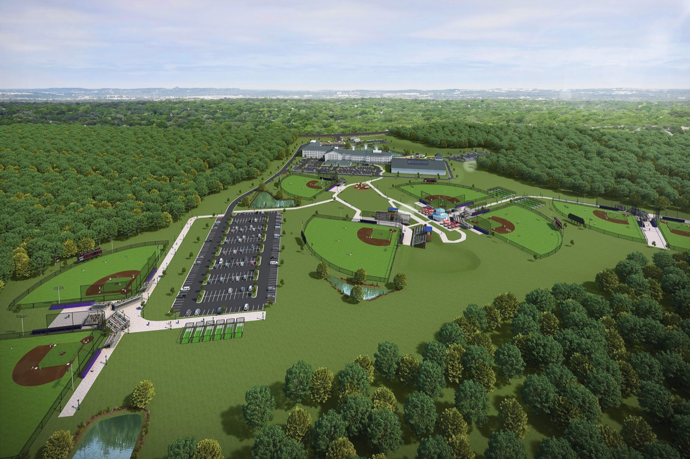
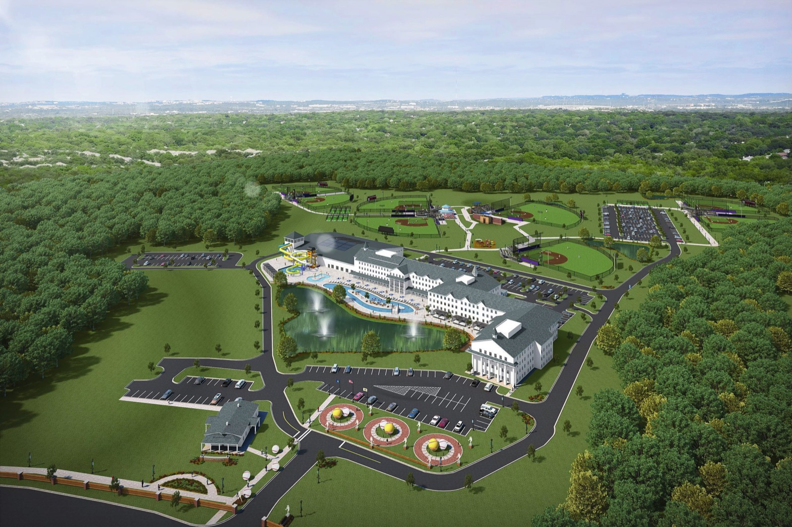
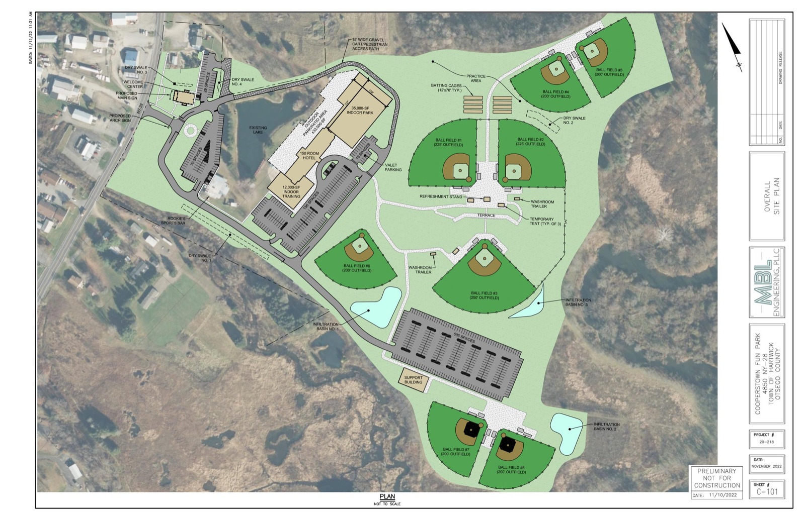
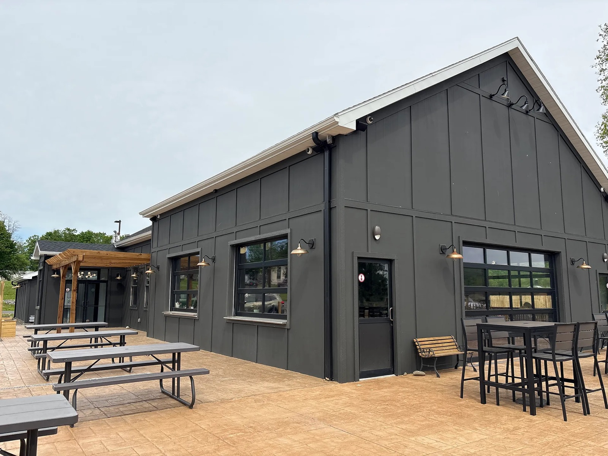
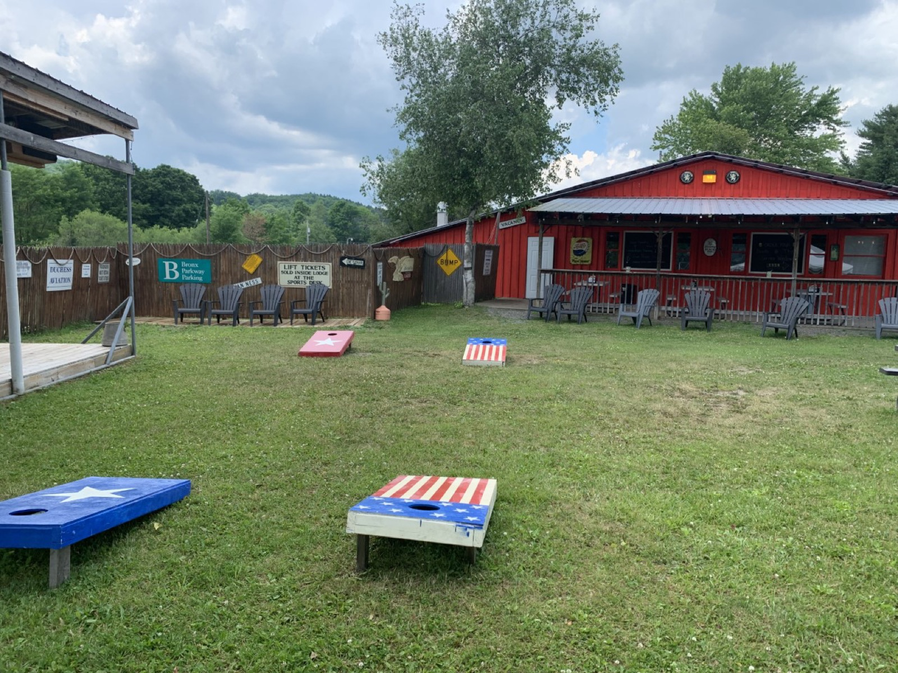
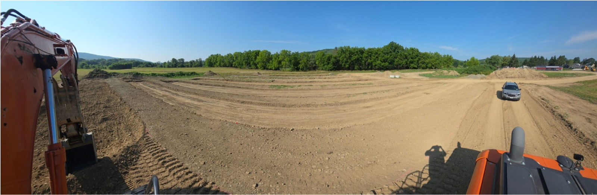
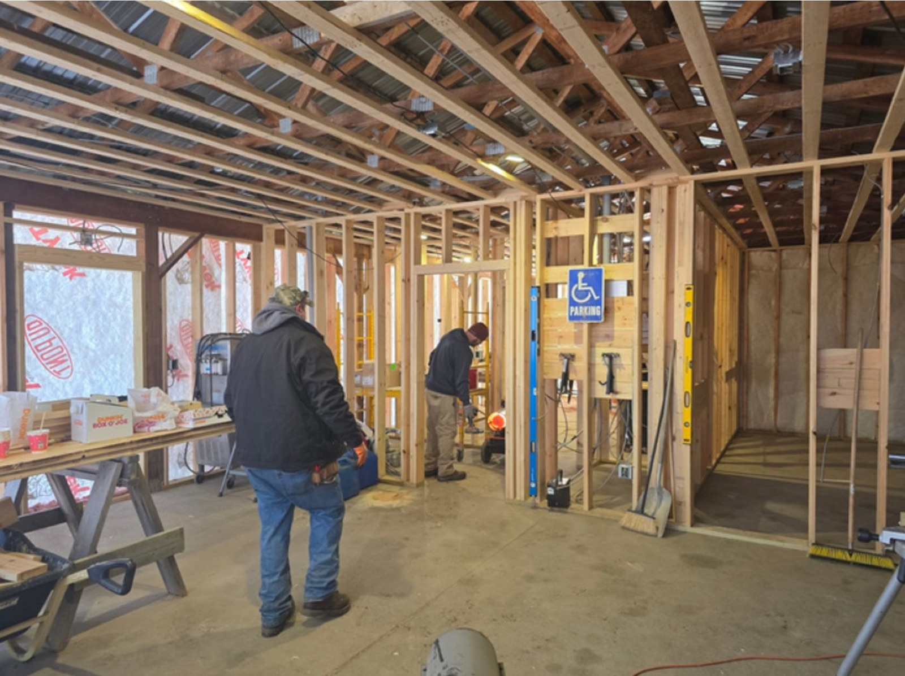
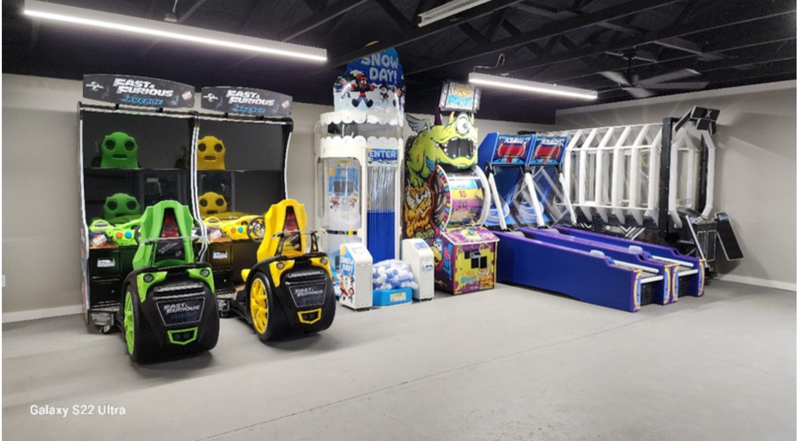

The site at cooperstownexperience.com was built to book tournament teams, and it still reads as if a 2025 or 2026 season were about to open. The people who most need to see it now are banks weighing a loan, investors and possible joint-venture partners. They want the vision, the plan and proof that it's real, and today's site doesn't show them any of that.
This brief sets out what the new site is for, what it would say and show, and how we'd build it. It's for Corey, Bob, Jeff and Amanda to review. Nothing gets built until you've given us your feedback.
To give a lender, investor or partner a clear picture of the Cooperstown Experience in five minutes: what's already open, what's approved and being built, what the finished resort will be, and who to call.
Each of the three readers comes with a different question. The site has to answer all three without turning into a loan application.
| Reader | What they need to see |
|---|---|
| A bank | That the project is real and de-risked: the land, the approvals, the work already done, the businesses already earning, and experienced owners. They'll get the numbers from the project packet, not from the website. |
| An investor | The size of the opportunity: the Hall of Fame a few miles away, the drive-time market, what makes this complex different, and how the phases grow. |
| A joint-venture partner | Where they fit. The later phases (the family lodge, more fields, indoor entertainment) are natural places for a hotel, construction or sports partner. |
It's your own vision, taken from the executive summary and business plan in the SBA package and cut down to what a first-time visitor can take in. The phases below follow the executive summary. The January 2026 pitch deck groups them differently, so question 1 asks which version is current.

Dream. Play. Remember. A youth baseball and softball destination a few miles from the National Baseball Hall of Fame, with tournament fields, family lodging, dining and entertainment on one property. It's built in phases, and the first part is already open.
Fenimore's Table (open year-round), the Cooperstown Clubhouse (reopens spring 2027), a 20-game arcade, wiffle ball fields, lawn games and the courtyard pond deck. This is the part a lender can drive up to and see working.
Three lit synthetic-turf tournament fields, concessions, a welcome center, parking and support buildings. The town's environmental review and the state health department's septic approval are in hand. Grading, septic and drainage are done, and the welcome center is being framed.
A 125-room family lodge with a family entertainment center, an arcade and dining.
Five more synthetic-turf fields, bringing the complex to eight, so it can host larger tournaments. Unlike the two established complexes nearby, the plan includes girls' softball and more age groups.


The restaurants are the proof that people already come to this property to eat, drink and bring their teams. Each gets photos, a few lines and a link to its own website, so the new site supports both restaurant sites instead of competing with them.


A lender's first question is whether the project is really moving. Dated photos and a short list of approvals answer that better than any sentence can. Real construction photos from the package are below. A new photo and a one-line update each month will keep the page current.



The approvals list would read as a simple timeline: SHPO "no effect" finding (January 2021), NYSDOT acceptance of the traffic study (January 2022), the Town of Hartwick Planning Board's environmental finding (July 2022), NYSDOH septic approval (May 2025) and the Otsego County building permits for the existing buildings (January 2026). The documents themselves go in the project packet, not on the site.
| On the website | In the project packet, sent on request |
|---|---|
| The vision, the phases, renderings and the master plan, the restaurants, dated progress photos, the approvals timeline, who's behind it, and one named contact | The executive summary, the Victus Advisors feasibility study, the construction budget and investment summary, financial projections, the approval documents and the engineering drawings |
No dollar figures on the public site. Every visitor would see them, and they date quickly. The site's call to action is "Request the project packet," which goes to whoever you name, and you decide who receives it. One caution: the 2025 appraisal restricts its own use in offering materials, so check with the appraiser before it goes to anyone other than a lender.
Five short pages. That's all these readers need.
The tournament schedule, pricing and parent pages come off the site for now. They come back when an opening date is set.
SportsEngine is built for running leagues and registering teams, and it does that well. It isn't built to tell a development story. Its template puts "Page Search" as the main heading on every page, it gives little control over how the pages appear in Google, and the site's analytics are an old Google Analytics code that stopped collecting data in 2023. Reworking all 23 pages inside it would cost more time than building five new ones, and the result would still look like a tournament site.
We'd build the new site outside SportsEngine and show it to you on a private preview link first. Once you approve it, it goes live at cooperstownexperience.com, the same address everyone already has. The domain stays in your name. The SportsEngine account can stay on file, so when tournaments open, registration can run there and the new site links to it.
Your answers to these are what the build is waiting on. A short reply to each is enough.
You review this and send your feedback and your answers to the questions above. We build the site on a private preview link, you go through it, and it goes live at cooperstownexperience.com only after you've signed off. Until then, the current site stays exactly as it is.
If this is the wrong direction, or only part of it is right, tell us and we'll rework the brief.
Prepared by Doble AI · John Rounds · September 22, 2026 · Sources: the Cooperstown Experience SBA loan package, the current website and both restaurant websites